ZISHEL XOMAGE 마스크팩 · 미국 아마존 판매용 영문 계정 @zishelxomage.cosmetic. 2026-09-21에 올린 게시글 3건(발행 완료)과 2026-11-26부터 12-29까지의 게시글 12건의 대표이미지와 캡션을 넣었다. 대표이미지와 캡션은 노션 발행 트래커가 원본이고, 새 게시글은 노션에 등록하면 이 표에 날짜순으로 추가한다. 우측 인스타 그리드는 날짜 역순. (최신 갱신: 2026-11-27)
| 14 | 11/30(월) | 제품 연구 |
Pick up the pouch.발행대기확인 필요마스크팩 제품컷 1 (확정 패키지, 파우치)
발행 예정 11/30(월) | 노션 덱 상태 발행대기 | 노션에 확인 필요 박스가 남아 있음(파우치 인쇄 표기 실물 대조)
게시글 내용 보기🇬🇧 EnglishPick up the pouch. Before you tear anything open, it already tells you where it sits in the system. Phase. Code. Core ingredient. Printed where you can see them. Inside: one sheet, 30 g. Designed as a system, not a product line. Every pack carries the same identity, so the system reads even off the shelf. 🗝️ Key Highlights - One sheet per pouch, 30 g. - Phase, code and core ingredient printed on the pouch. - One identity across the whole system. ZISHEL XOMAGE · EXO PDRN Clinical Interval Care. 🇰🇷 한글 (참고용)파우치를 집어 들어 보세요. 뜯기 전에 이미, 이 제품이 시스템 안 어디에 놓이는지 알려 줍니다. 단계. 코드. 핵심 성분. 보이는 자리에 인쇄했습니다. 안에는 30 g짜리 시트 1장. 제품 라인이 아니라 시스템으로 디자인했습니다. 모든 패키지가 같은 아이덴티티를 담아, 진열대를 벗어나서도 시스템이 읽힙니다. 🗝️ 핵심 정리 - 파우치 하나에 30 g 시트 1장. - 파우치에 단계, 코드, 핵심 성분 인쇄. - 시스템 전체에 하나의 아이덴티티. ZISHEL XOMAGE · EXO PDRN 클리니컬 인터벌 케어. |
— | 노션 → |
| 4 | 12/1(화) | 브랜드 방향 |
Not daily skincare. A different category.발행대기브랜드 코어: 쏘마지 코스메틱이 존재하는 이유
발행 예정 12/1(화) | 노션 덱 상태 발행대기
게시글 내용 보기🇬🇧 EnglishNot daily skincare. A different category. Built by the company behind the treatment, for the days between treatments. Clinical Interval Care. 🇰🇷 한글 (참고용)데일리 스킨케어가 아닙니다. 다른 카테고리입니다. 시술을 만든 회사가, 시술과 시술 사이의 날들을 위해 만들었습니다. Clinical Interval Care. |
— | 노션 → |
| 5 | 12/3(목) | 정보성 글 |
Why skin after a procedure needs its own care발행대기시술 후 피부는 왜 따로 관리해야 하나
발행 예정 12/3(목) | 노션 덱 상태 발행대기
게시글 내용 보기🇬🇧 EnglishInside the Interval: EP 02 After a procedure, the question changes. Not "What should I put on today?" But "Where am I in the interval?" 🗝️ Key Highlights - Timing: Daily skincare runs every day, indefinitely. Interval care follows a defined window, from Day 0 to Day 8+. - Formula: Daily skincare is one routine for every day. Interval care uses a different formula for each phase. - Purpose: Daily skincare is general upkeep. Interval care is built around the days after a procedure. Which day of the interval are you on today? Clinical Interval Care. 🇰🇷 한글 (참고용)Inside the Interval: EP 01 시술을 받고 나면 질문이 바뀝니다. "오늘은 뭘 바르지?"가 아니라 "나는 지금 인터벌의 어디쯤이지?"로요. 🗝️ 핵심 정리 - 시기: 데일리 스킨케어는 매일, 기한 없이 씁니다. 인터벌 케어는 0일차부터 8일차 이후까지 정해진 기간을 따릅니다. - 포뮬러: 데일리 스킨케어는 매일 같은 하나의 루틴입니다. 인터벌 케어는 단계마다 다른 포뮬러를 씁니다. - 목적: 데일리 스킨케어는 일상적인 관리입니다. 인터벌 케어는 시술 뒤의 날들을 기준으로 만들었습니다. 오늘은 인터벌의 며칠째인가요? Clinical Interval Care. |
— | 노션 → |
| 6 | 12/8(화) | 브랜드 방향 |
The technology behind the system.발행대기브랜드 스토리: 클리닉의 케어를 집으로
발행 예정 12/8(화) | 노션 덱 상태 발행대기
게시글 내용 보기🇬🇧 EnglishOne foundation. Three layers. We own the technology. ZISHEL BIO, from research and cultivation to purification, manufacturing and quality control. We define the professional treatment standard. ZISHEL XOMAGE, for practitioners. And for the days between visits, the same foundation becomes a cosmetic system. ZISHEL XOMAGE COSMETIC. Same technology foundation. Different formulation. Different use context. Clinical Interval Care. 🇰🇷 한글 (참고용)하나의 기반. 세 개의 층. 우리는 기술을 직접 보유합니다. 연구와 배양부터 정제, 제조, 품질관리까지 맡는 ZISHEL BIO. 우리는 전문 시술의 기준을 정의합니다. 시술자를 위한 ZISHEL XOMAGE. 그리고 방문과 방문 사이의 날들을 위해, 같은 기반이 화장품 시스템이 됩니다. ZISHEL XOMAGE COSMETIC. 같은 기술 기반. 다른 포뮬러. 다른 사용 맥락. Clinical Interval Care. |
— | 노션 → |
| 7 | 12/10(목) | 정보성 글 |
What is interval care?발행대기인터벌 케어란 (시술과 시술 사이의 관리)
발행 예정 12/10(목) | 노션 덱 상태 발행대기
게시글 내용 보기🇬🇧 EnglishInside the Interval: EP 03 The days between treatments are not empty. They're engineered. 🗝️ Key Highlights - Day 0 to 24H: The most delicate hours. A minimal routine. - Day 2 to 7: Focused care through the first week. - Day 8+: A consistent routine until the next visit. How do you spend the days between your visits? Clinical Interval Care. 🇰🇷 한글 (참고용)Inside the Interval: EP 02 시술과 시술 사이의 날들은 비어 있지 않습니다. 설계되어 있습니다. 🗝️ 핵심 정리 - 0~24시간: 가장 민감한 시간. 최소한의 루틴. - 2~7일차: 첫 일주일 동안의 집중 케어. - 8일차 이후: 다음 방문까지 이어지는 일관된 루틴. 방문과 방문 사이의 날들, 어떻게 보내고 계신가요? Clinical Interval Care. |
— | 노션 → |
| 10 | 12/15(화) | 브랜드 방향 |
The standard does not stop at the clinic door.발행대기브랜드 비전
발행 예정 12/15(화) | 노션 덱 상태 발행대기
게시글 내용 보기🇬🇧 EnglishThe standard does not stop at the clinic door. Upstream, in Seoul and Wonju, research, cultivation, purification, manufacturing and quality control sit within one technology foundation. That is ZISHEL BIO. ZISHEL XOMAGE brings that foundation into professional treatment. ZISHEL XOMAGE COSMETIC carries the same foundation into the days between visits. Technology. Treatment. Between visits. One connected system. Different products. Different use contexts. Our vision is simple: a connected foundation for interval care. Because the days between treatments are not empty. They're engineered. 🗝️ Key Highlights - Upstream: ZISHEL BIO, the technology foundation behind cultivation, purification, manufacturing and quality control. - In practice: ZISHEL's clinical technology is trusted in 50+ countries. - Between visits: ZISHEL XOMAGE COSMETIC, structured around the same foundation. Built on technology. Designed for the days between. Clinical Interval Care. 🇰🇷 한글 (참고용)기준은 클리닉 문 앞에서 멈추지 않습니다. 가장 앞 단계, 서울과 원주에서 연구, 배양, 정제, 제조, 품질관리가 하나의 기술 기반 안에서 이어집니다. ZISHEL BIO입니다. ZISHEL XOMAGE는 그 기반을 전문 시술로 가져갑니다. ZISHEL XOMAGE COSMETIC은 같은 기반을 시술과 시술 사이의 날들로 옮깁니다. 기술. 시술. 방문 사이. 하나로 연결된 시스템. 서로 다른 제품. 서로 다른 사용 맥락. 우리의 비전은 단순합니다. 인터벌 케어를 위한, 하나로 연결된 기반. 시술과 시술 사이의 날들은 비어 있지 않고, 설계되어 있기 때문입니다. 🗝️ 핵심 정리 - 가장 앞 단계: 배양, 정제, 제조, 품질관리를 뒷받침하는 기술 기반 ZISHEL BIO. - 현장에서: ZISHEL의 임상 기술은 50개국 이상에서 신뢰받고 있습니다. - 방문 사이에: 같은 기반 위에 짠 ZISHEL XOMAGE COSMETIC. 기술 위에 세웠습니다. 시술과 시술 사이의 날들을 위해 설계했습니다. 클리니컬 인터벌 케어. |
— | 노션 → |
| 9 | 12/17(목) | 정보성 글 |
Two rooms. One foundation.발행대기클리닉 케어와 홈케어, 무엇이 다른가
발행 예정 12/17(목) | 노션 덱 상태 발행대기
게시글 내용 보기🇬🇧 EnglishInside the Interval: EP 04 Two rooms. One foundation. In the clinic, a practitioner works within a protocol, using professional products made for that setting. Between visits, it's just you, a mirror, and a question most routines never ask. Daily skincare asks: "What should I put on today?" Clinical interval care asks: "Where am I in the interval?" One is a single routine, every day, with no end date. The other is a defined window, with a different logic for each stage. ZISHEL XOMAGE COSMETIC is built on the same technology foundation as ZISHEL's professional line. It is a separate cosmetic line, and it is not the professional formulation. 🗝️ Key Highlights - In the clinic: Professional products, used by practitioners within treatment protocols. - Between visits: A separate cosmetic line, built on the same technology foundation and phase-based care concept. - The question changes: from "What should I put on today?" to "Where am I in the interval?" - The difference: A cosmetic line. Not the professional formulation. Does your routine change after a visit? Clinical Interval Care. 🇰🇷 한글 (참고용)Inside the Interval: EP 04 두 개의 공간. 하나의 기반. 클리닉에서는 시술자가 프로토콜 안에서, 그 공간을 위해 만든 전문가용 제품을 씁니다. 방문과 방문 사이에는 당신과 거울, 그리고 대부분의 루틴이 묻지 않는 질문 하나가 남습니다. 데일리 스킨케어는 묻습니다. "오늘은 뭘 바르지?" 클리니컬 인터벌 케어는 묻습니다. "나는 지금 인터벌의 어디쯤이지?" 하나는 기한 없이 매일 같은 루틴입니다. 다른 하나는 정해진 기간이고, 단계마다 다른 논리를 가집니다. ZISHEL XOMAGE COSMETIC은 ZISHEL의 전문가용 라인과 같은 기술 기반 위에 만들었습니다. 별도의 화장품 라인이며, 전문가용 포뮬러가 아닙니다. 🗝️ 핵심 정리 - 클리닉에서: 전문가용 제품은 시술자가 시술 프로토콜 안에서 사용합니다. - 방문 사이에: 같은 기술 기반과 단계별 케어 개념을 중심으로 짠, 별도의 화장품 라인입니다. - 질문이 달라집니다: "오늘은 뭘 바르지?"에서 "나는 지금 인터벌의 어디쯤이지?"로. - 차이: 화장품 라인입니다. 전문가용 포뮬러가 아닙니다. 시술을 받고 나면 루틴이 달라지시나요? 클리니컬 인터벌 케어. |
— | 노션 → |
| 11 | 12/22(화) | 정보성 글 |
Five questions about the mask pack발행대기확인 필요마스크팩 자주 묻는 질문
발행 예정 12/22(화) | 노션 덱 상태 발행대기 | 캡션에 비어 있는 칸 1개(붙여 두는 시간)
게시글 내용 보기🇬🇧 EnglishInside the Interval: EP 05 Five questions we keep hearing about the mask pack. "Is this what my clinic uses?" ZISHEL XOMAGE COSMETIC is a cosmetic line. It is not the professional formulation. Still, people who had a procedure at a clinic overseas keep using it, because it helps a great deal with soothing. "What's in one pack?" Five sheets, 30 g each. "How is it different from the sheet mask I use every week?" A weekly mask belongs to a daily routine. This one is built around a defined window after a visit, with its own care logic. "When do I use it?" Right when your skin needs calming. "How long do I leave it on?" [Wear time, to be confirmed with ZISHEL] 🗝️ Key Highlights - A cosmetic line, not the professional formulation. - Used after procedures at clinics overseas, because it helps a great deal with soothing. - One pack: five sheets, 30 g each. - Use it right when your skin needs calming. Got a question we didn't answer? Clinical Interval Care. 🇰🇷 한글 (참고용)Inside the Interval: EP 05 마스크팩에 대해 가장 자주 듣는 질문 다섯 가지. "병원에서 쓰는 제품과 같은 건가요?" ZISHEL XOMAGE COSMETIC은 화장품 라인이며, 전문가용 포뮬러가 아닙니다. 그래도 해외 클리닉에서 시술받은 뒤 이 마스크팩을 쓰는 분들은, 진정에 아주 많이 도움이 돼 계속 사용하고 있습니다. "한 팩에 몇 장 들어 있나요?" 30 g짜리 시트 5장입니다. "매주 쓰던 시트 마스크와는 뭐가 다른가요?" 매주 쓰는 마스크는 데일리 루틴에 속합니다. 이 마스크팩은 방문 이후 정해진 기간을 기준으로, 자기만의 케어 논리를 갖고 있습니다. "언제 쓰나요?" 진정이 필요할 때 바로 붙이세요. "얼마나 붙이고 있나요?" [붙여 두는 시간, 지쉘 확인 후 기입] 🗝️ 핵심 정리 - 화장품 라인이며, 전문가용 포뮬러가 아닙니다. - 해외 클리닉에서 시술받은 뒤, 진정에 아주 많이 도움이 돼 사용하고 있습니다. - 한 팩에 30 g 시트 5장. - 진정이 필요할 때 바로 붙이세요. 답하지 못한 질문이 있으신가요? 클리니컬 인터벌 케어. |
— | 노션 → |
| 13 | 12/24(목) | 겨울 |
It's the 24th. Nothing on your calendar says "visit."발행대기확인 필요크리스마스 선물 제안
발행 예정 12/24(목) | 노션 덱 상태 발행대기 | 노션에 확인 필요 박스가 남아 있음(출시 전 선물 제안)
게시글 내용 보기🇬🇧 EnglishIt's the 24th. Nothing on your calendar says "visit." No appointment. No protocol. Just the days between, and the people in them. The coffee that gets cold while you talk. The mirror in a friend's hallway. The photo someone takes before you're ready. Those days aren't empty. We spent this year building for them. Not the loud ones. The quiet ones. Wishing you a calm, bright one. ZISHEL XOMAGE COSMETIC Clinical Interval Care. 🇰🇷 한글 (참고용)12월 24일입니다. 달력에 "방문"이라고 적힌 날은 없습니다. 예약도, 프로토콜도 없는 날. 시술과 시술 사이의 날들, 그리고 그 안에 있는 사람들만 있습니다. 이야기하다 식어 버린 커피. 친구 집 복도에 걸린 거울. 준비되기 전에 누군가 찍어 버린 사진. 그런 날들은 비어 있지 않습니다. 우리는 올 한 해를 그 날들을 위해 썼습니다. 시끄러운 날이 아니라, 조용한 날을 위해. 차분하고 환한 하루 보내세요. ZISHEL XOMAGE COSMETIC 클리니컬 인터벌 케어. |
— | 노션 → |
| 12 | 12/29(화) | 슬로건 |
Not Daily Skincare. Clinical Interval Care.발행대기확인 필요브랜드 슬로건
발행 예정 12/29(화) | 노션 덱 상태 발행대기 | 노션에 확인 필요 박스가 남아 있음(12/1 커버와 같은 문장)
게시글 내용 보기🇬🇧 EnglishNot Daily Skincare. Clinical Interval Care. Two lines. Four differences. Purpose Daily: general maintenance of healthy skin. Interval: structured care after a clinical procedure. Timing Daily: every day, indefinitely. Interval: a defined window, from Day 0 through Day 8+. Formula logic Daily: one routine for every day. Interval: a different formula for each phase. The question Daily: "What should I put on today?" Interval: "Where am I in the interval?" Not a better version of the same category. A different category. Clinical Interval Care. 🇰🇷 한글 (참고용)데일리 스킨케어가 아닙니다. 클리니컬 인터벌 케어입니다. 두 줄. 네 가지 차이. 목적 데일리: 건강한 피부의 일상적인 유지 관리. 인터벌: 시술 후의 체계적인 케어. 시기 데일리: 매일, 기한 없이. 인터벌: 0일차부터 8일차 이후까지, 정해진 기간. 포뮬러 논리 데일리: 매일 같은 하나의 루틴. 인터벌: 단계마다 다른 포뮬러. 기준 질문 데일리: "오늘은 뭘 바르지?" 인터벌: "나는 지금 인터벌의 어디쯤이지?" 같은 카테고리의 더 나은 버전이 아닙니다. 다른 카테고리입니다. 클리니컬 인터벌 케어. |
— | 노션 → |
| — | 11/26(목) | 제품 연구 |
Exosome Mask Reel (Russian, English subtitles)발행 완료 ✅엑소좀 마스크 릴스 (러시아어, 영어 자막)
✅ 11/26 발행 완료(노션 표시) | 영상 27.9초 | 러시아어 음성, 영어 자막
게시글 내용 보기🇬🇧 EnglishExosome technology. Growth factors. Hydrated, calm-looking skin. Centella extract is in there for instant soothing, so the mask is made to feel comfortable on skin. ZISHEL XOMAGE · EXO PDRN Clinical Interval Care. 🇰🇷 한글 (참고용)엑소좀 기술. 성장인자. 촉촉하고 편안해 보이는 피부. 센텔라 추출물이 즉각적인 진정을 위해 들어 있어, 피부에 편안하게 쓰도록 만든 마스크입니다. ZISHEL XOMAGE · EXO PDRN 클리니컬 인터벌 케어. |
— | 노션 → |
| 8 | 11/27(금) | 연구 방법 |
Precision begins with the source.발행 완료 ✅지쉘바이오 기술: 배양, 정제, 품질관리
✅ 11/27 발행 완료(노션 표시)
게시글 내용 보기🇬🇧 EnglishInside the Interval: EP 01 Precision begins with the source. PuriMAX™ is ZISHEL BIO's purification and quality-control platform, managing the process from source through release. 🗝️ Key Highlights - Source: Traceable raw-material sourcing. - Purification: Multi-stage purification and isolation. - Quality control: Analytical and functional checks before final review and release. What do you look for first in a formula? Clinical Interval Care. #xomagecosmetic #ziehel #zishelxomage #xomage #exosomas 🇰🇷 한글 (참고용)Inside the Interval: EP 03 정밀함은 원료에서 시작됩니다. PuriMAX™는 원료부터 출하까지의 공정을 관리하는 ZISHEL BIO의 정제, 품질관리 플랫폼입니다. 🗝️ 핵심 정리 - 원료: 추적 가능한 원료 수급. - 정제: 다단계 정제와 분리. - 품질관리: 분석과 기능 검사를 거친 뒤 최종 검토와 출하. 포뮬러를 볼 때 가장 먼저 확인하는 건 무엇인가요? Clinical Interval Care. |
— | 노션 → |
| 1 | 9/21(월) | 브랜드 방향 |
Special Lyophilized Exosomes · All-in-One Edition업로드 완료 ✅브랜드 방향 · 3분할 그리드 우측 · 동결건조 엑소좀 바이알 박스
✅ 2026-09-21 업로드 완료 · Instagram · 단독 이미지 1장
게시글 내용 보기🇬🇧 English#xomage #xomagecosmetic 🇰🇷 한글 (참고용)해시태그만 있는 캡션이라 번역할 본문이 없다. |
인스타 ↗ | 노션 → |
| 2 | 9/21(월) | 브랜드 방향 |
ZISHEL XOMAGE EXO-PDRN Mask업로드 완료 ✅브랜드 방향 · 3분할 그리드 가운데 · 마스크팩 박스
✅ 2026-09-21 업로드 완료 · Instagram · 단독 이미지 1장
게시글 내용 보기🇬🇧 English#xomage #xomagecosmetic 🇰🇷 한글 (참고용)해시태그만 있는 캡션이라 번역할 본문이 없다. |
인스타 ↗ | 노션 → |
| 3 | 9/21(월) | 브랜드 방향 |
Cell-Platform Activator · All-in-One Edition업로드 완료 ✅브랜드 방향 · 3분할 그리드 좌측 · 열린 박스 컷
✅ 2026-09-21 업로드 완료 · Instagram · 단독 이미지 1장
게시글 내용 보기🇬🇧 English#xomage #xomagecosmetic 🇰🇷 한글 (참고용)해시태그만 있는 캡션이라 번역할 본문이 없다. |
인스타 ↗ | 노션 → |
2026-09-21 인스타그램에 올린 3건과, 11/26 릴스와 11/27 카드뉴스(노션에서 발행완료로 표시된 2건). 9/21의 세 이미지는 한 장의 파노라마를 나눈 것이다.
지쉘바이오 기술 글(원료, 정제, 품질관리). 노션에서 발행완료로 표시되어 있고, 인스타 주소는 아직 연결하지 않았다.
러시아어 영상에 영어 자막을 입힌 엑소좀 마스크 릴스(27.9초 편집본). 노션에서 발행완료로 표시되어 있고, 인스타 주소는 아직 연결하지 않았다.
동결건조 엑소좀 바이알 박스 컷. 3분할 파노라마의 오른쪽 타일. 캡션은 해시태그 2개(#xomage #xomagecosmetic).
EXO-PDRN 마스크팩 박스가 가운데에 선 제품 라인업 컷. 3분할 파노라마의 가운데 타일. 캡션은 해시태그 2개(#xomage #xomagecosmetic).
열린 박스 컷. 3분할 파노라마의 왼쪽 타일(가장 최근 게시물). 캡션은 해시태그 2개(#xomage #xomagecosmetic).
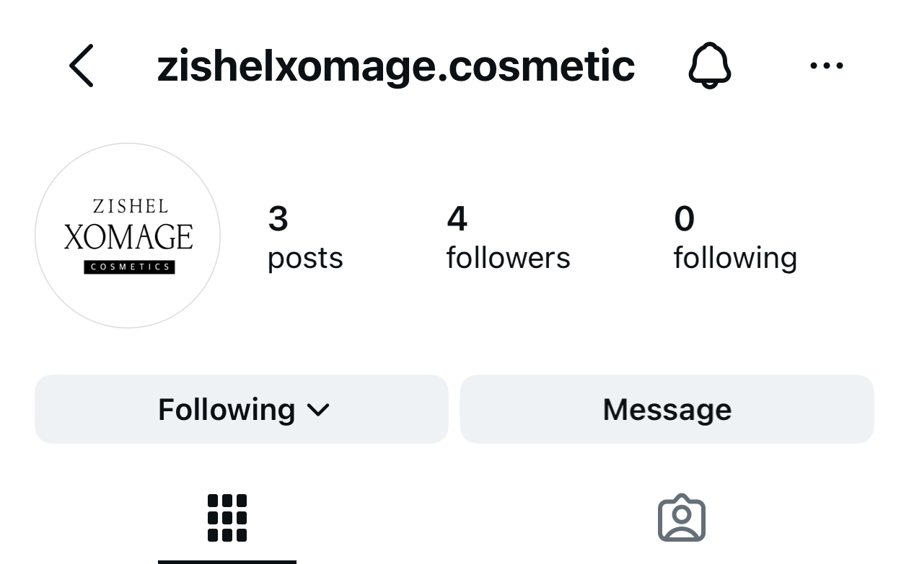
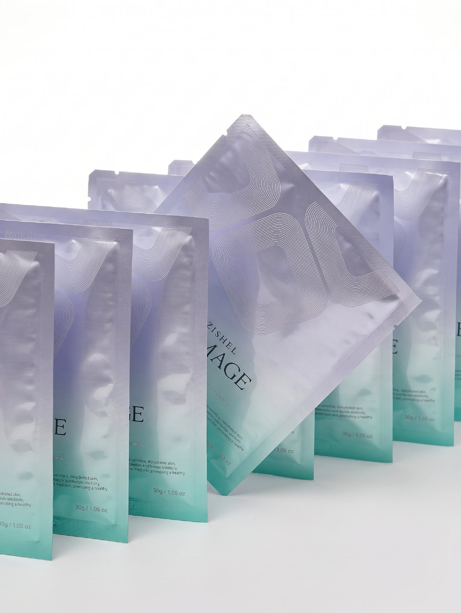
12/17정보성 글 Two rooms. One foundation. 클리닉 케어와 홈케어, 무엇이 다른가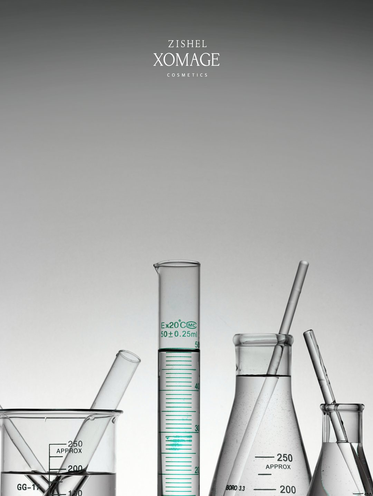
12/15브랜드 방향 The standard does not stop at the clinic door. 브랜드 비전 12/10정보성 글 What is interval care? 인터벌 케어란 (시술과 시술 사이의 관리)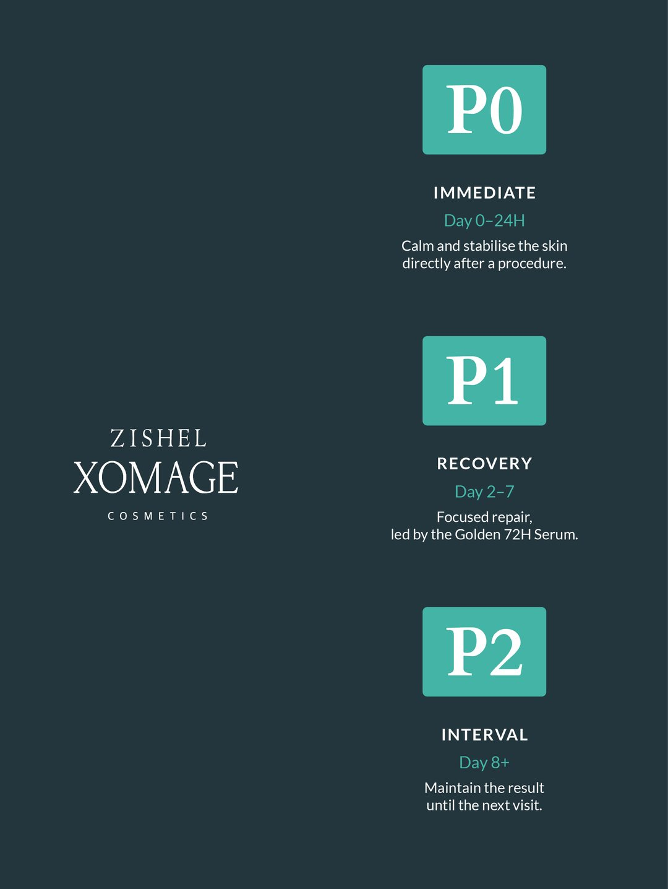
12/8브랜드 방향 The technology behind the system. 브랜드 스토리: 클리닉의 케어를 집으로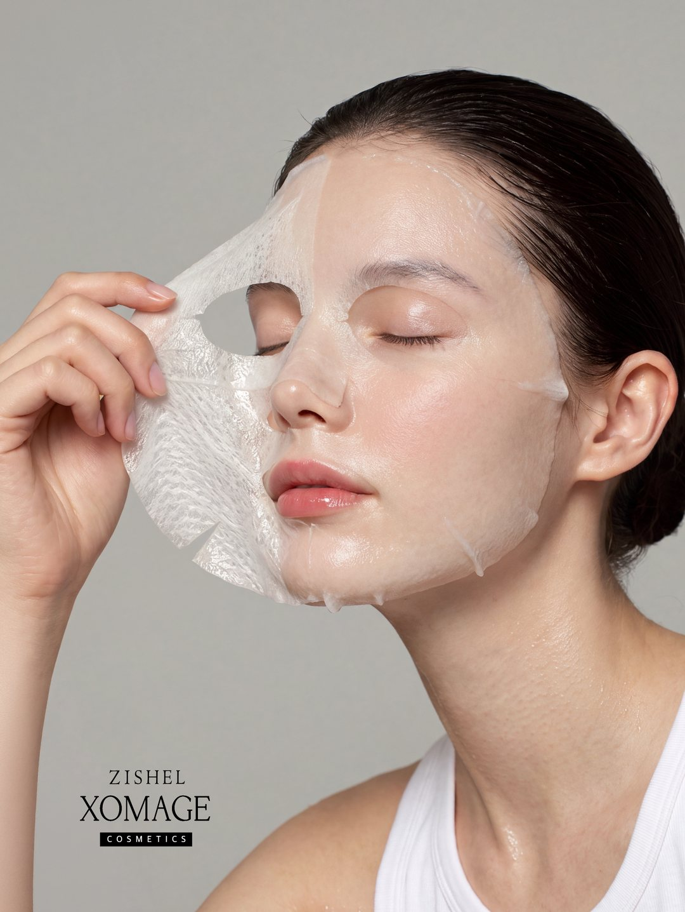
12/3정보성 글 Why skin after a procedure needs its own care 시술 후 피부는 왜 따로 관리해야 하나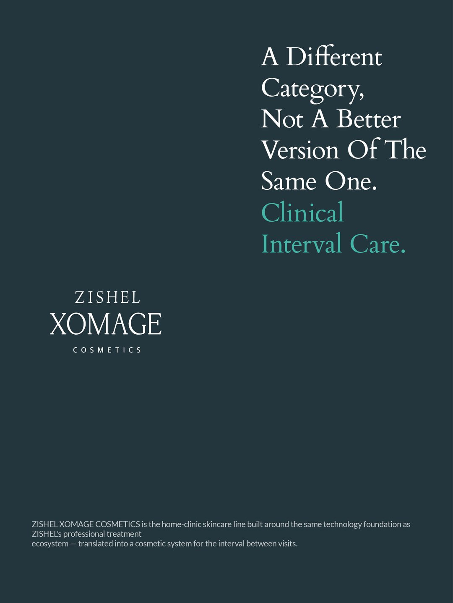
12/1브랜드 방향 Not daily skincare. A different category. 브랜드 코어: 쏘마지 코스메틱이 존재하는 이유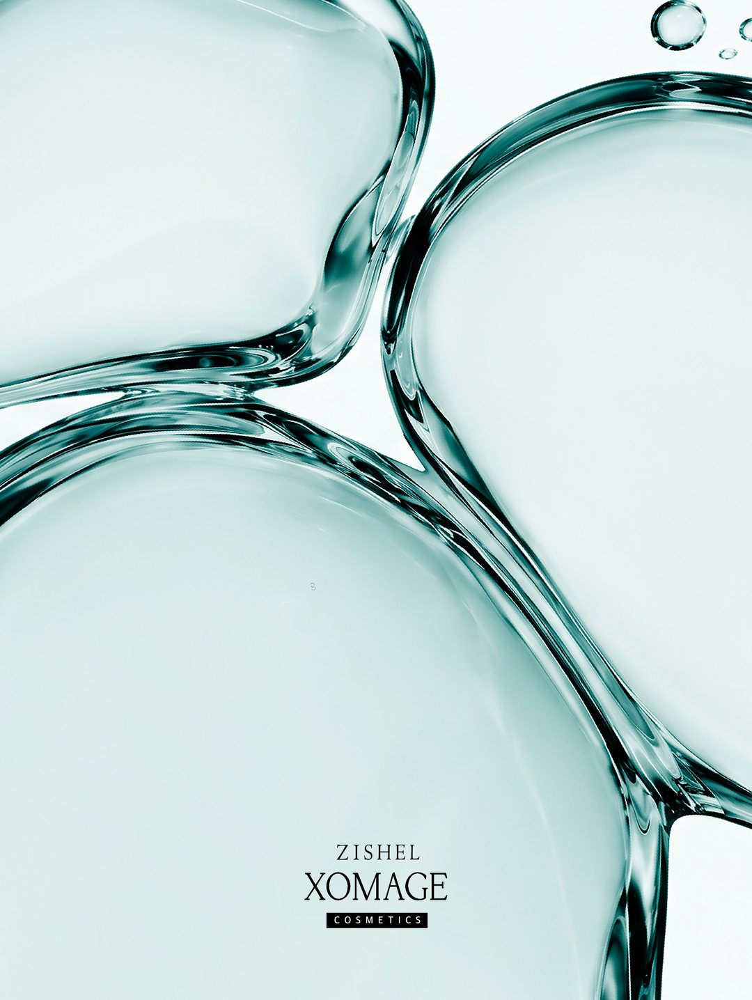
11/30제품 연구 Pick up the pouch. 마스크팩 제품컷 1 (확정 패키지, 파우치)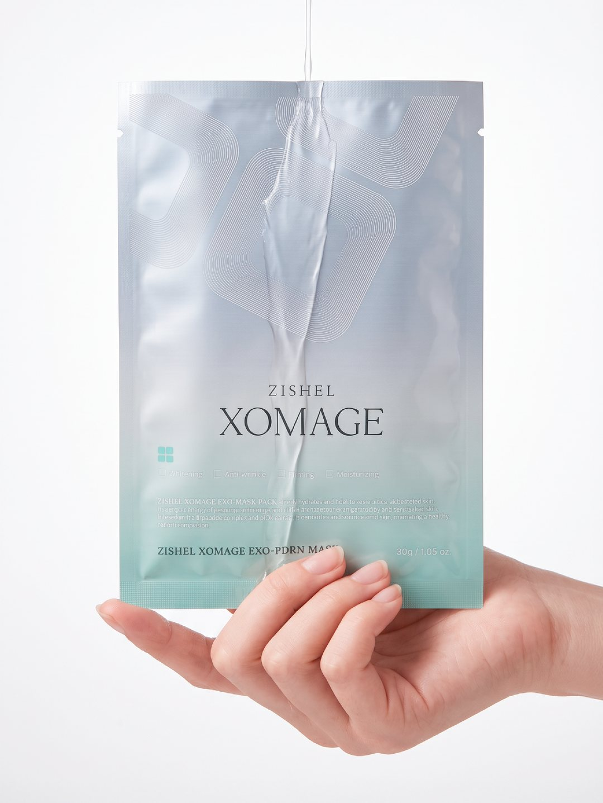
11/27 ✓ 업로드 완료연구 방법 Precision begins with the source. 지쉘바이오 기술: 배양, 정제, 품질관리 11/26 ✓ 업로드 완료제품 연구 Exosome Mask Reel (Russian, English subtitles) 엑소좀 마스크 릴스 (러시아어, 영어 자막)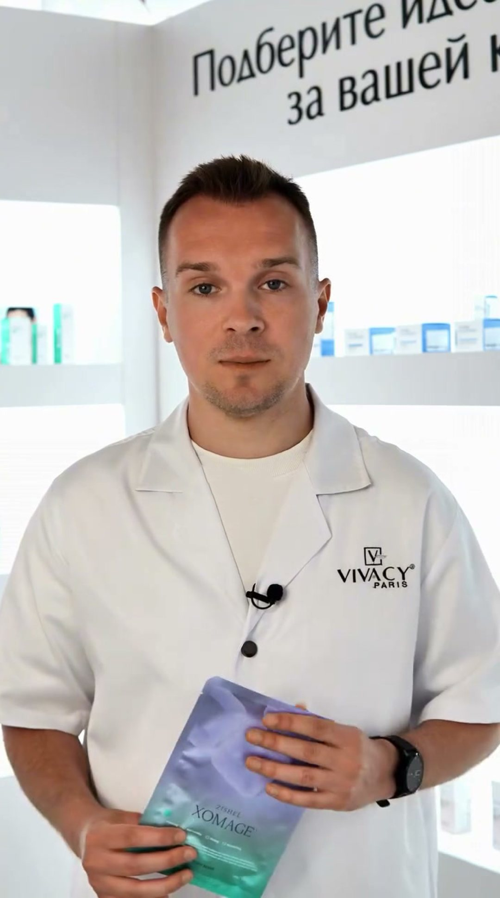
9/21브랜드 방향 Cell-Platform Activator · All-in-One Edition 열린 박스 컷 (그리드 좌)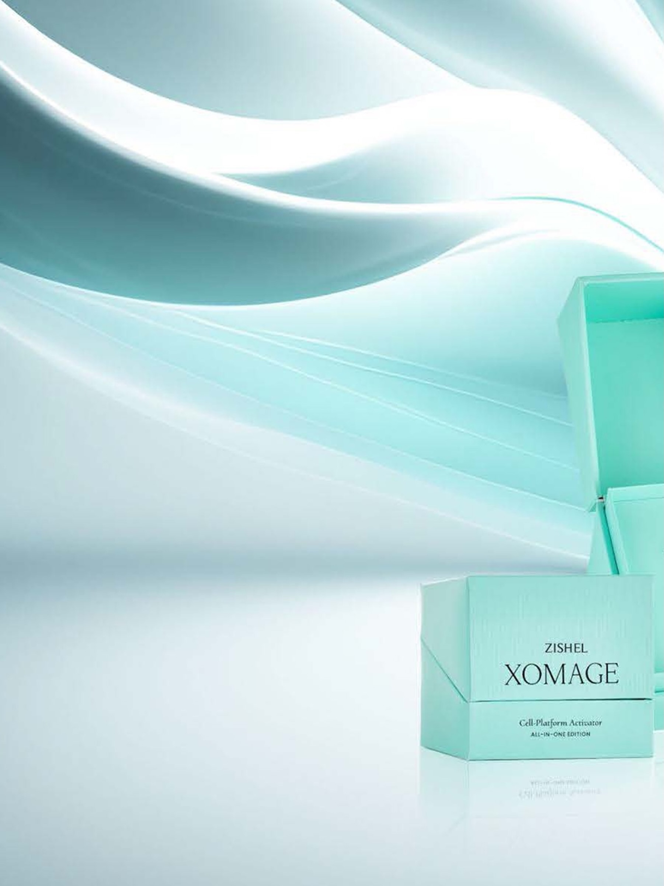
9/21브랜드 방향 ZISHEL XOMAGE EXO-PDRN Mask 마스크팩 박스 (그리드 가운데)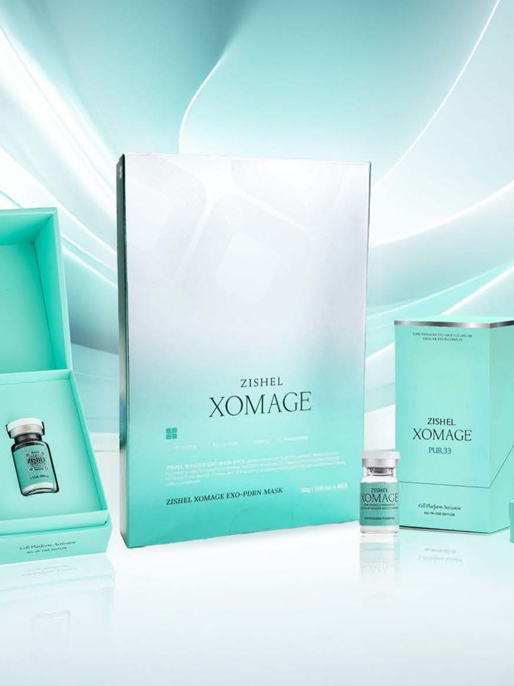
9/21브랜드 방향 Special Lyophilized Exosomes · All-in-One Edition 동결건조 엑소좀 바이알 박스 (그리드 우)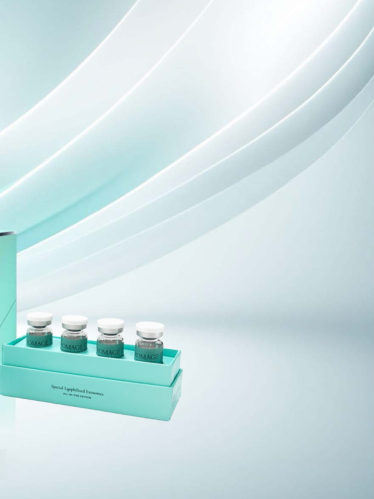